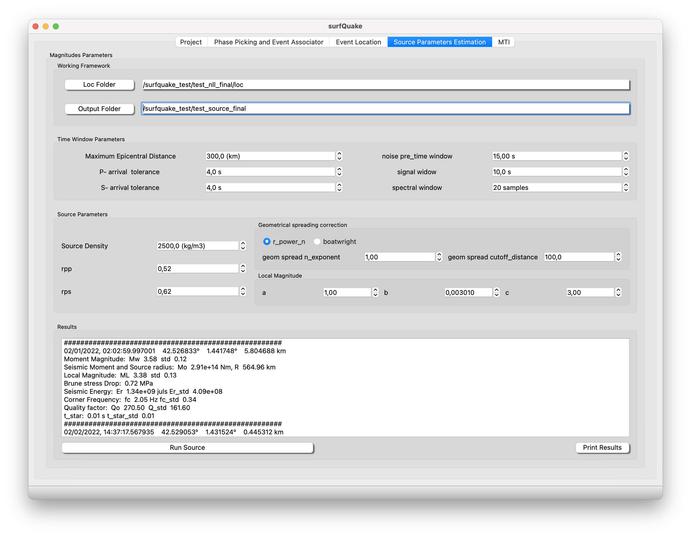

Source Parameters
The tool Source Parameters is designed to estimate events source parameters (i.e., Mw, ML, seismic moment, corner frequency, radiated energy, source size and stress drop) and the attenuation parameters (t-star, quality factor). It is based in the implementation of Satrinano et al., 2023. A detailed theoretical background can be found here
Source Parameters GUI

- Time Window Parameters
- P- and S-wave tolerance: Difference in seconds from the detected wave and the theroretical arrival time.
- noise_pre_time window: Window lenght before the first arrival time
- signal window: Window leght of signal to be analyse after first phase arrival time
- spectral window: Time window before the first arrival time
- Source Parameters
- Source Density: Density of the rock in the source.
- rpp: Radiation pattern coefficient for the P-wave
- rps: Radiation pattern coefficient for the S-wave
- Geometrical Spreading Correction: Spectra will be multiplied by this value to correct for the lost amplitude
- r_power_n: geom_spread_n_exponent = 1 (default, body wave in a homogeneous full-space), 0.5 (surface wave in a homogeneous half-space)
- boatwright: "r" (body waves) geometrical spreading for hypocentral distances below a cutoff distance; frequency-dependent geometrical spreading above the cutoff distance (Boatwright et al., 2002).
- Geometrical spreading cutoff distance: Geometrical spreading cutoff distance, in km, for the "boatwright" model
- Local Magnitude: Local magnitude parameters: ml = log10(A) + a * log10(R/100) + b * (R-100) + c, where A is the maximum W-A amplitude (in mm) and R is the hypocentral distance (in km)
Config file
# GENERAL PARAMETERS --------
# All the fields are optional.
# The filled in fields will be written to output files.
# Author information
author_name = SurfQuakeCore
author_email = https://projectisp.github.io/ISP_tutorial.github.io/
# Agency information
agency_full_name = Spanish Navy Observatory
agency_short_name = ROA
agency_url = https://armada.defensa.gob.es/ArmadaPortal/page/Portal/ArmadaEspannola/cienciaobservatorio/prefLang-es/02InfoGeneral
# -------- GENERAL PARAMETERS
# TRACE AND METADATA PARAMETERS --------
# Channel naming for mis-oriented channels (vertical, horiz1, horiz2):
# Example:
# mis_oriented_channels = Z,1,2
mis_oriented_channels = Z, 1, 2
# Option to specify non standard instrument codes (e.g., "L" for accelerometer)
instrument_code_acceleration = None
instrument_code_velocity = None
# For more complex network.station.location.channel (SCNL) naming scenarios,
# you can provide a file, in json format, with traceid (SCNL) mapping
traceid_mapping_file = None
# List of traceids to ignore.
# Use network.station.location.channel; wildcards are accepted
# Example:
# ignore_traceids = FR.CIEL.*.*, AM.RA0D3.00.*
ignore_traceids = None
# List of traceids to use.
# Use network.station.location.channel; wildcards are accepted
# Example:
# use_traceids = FR.CIEL.*.*, AM.RA0D3.00.*
use_traceids = None
# Epicentral distance ranges (km) to select stations to be processed.
# Use a list of alternating min/max values, ex.:
# to only use stations between 0 and 100 km:
# epi_dist_ranges = 0, 100
# to avoid teleseismic distances between 14° (1300 km) and 29° (3200 km)
# where the P-wave undergoes travel time triplications:
# epi_dist_ranges = 0, 1300, 3200, 999999
# Leave it to None to use all stations.
epi_dist_ranges = 0, 400.0
# Directory or single file name containing station metadata
# (instrument response and station coordinates).
# Note: this parameter can be overridden by the command line option
# with the same name.
# Station metadata files can be in one of the following formats:
# StationXML, dataless SEED, SEED RESP, PAZ (SAC polezero format)
# Notes:
# 1. SourceSpec will not enter in subdirectories of the given directory
# (only one level allowed)
# 2. Traceid for PAZ files is specified through their name.
# The traceid (network.station.location.channel) must be in the last four
# fields (separated by a dot ".") before the file suffix (which can be
# ".paz", ".pz", or no suffix).
# Example:
# PREFIX.NET.STA.LOC.CHAN.paz
# or (no prefix):
# NET.STA.LOC.CHAN.paz
# or (no prefix and no suffix):
# NET.STA.LOC.CHAN
# 3. If no traceid is specified through the PAZ file name, then it is assumed
# that this is a generic PAZ, valid for all the stations that do not have
# a specific PAZ. Use "trace_units" below to specify the units of the
# generic PAZ.
# 4. SEED RESP and PAZ files do not contain station coordinates, which
# should therefore be in the trace header (traces in SAC format)
#station_metadata = inventory.xml
# It is also possible to provide a constant sensitivity (i.e., flat instrument
# response curve) as a numerical value or a combination of SAC header fields
# (in this case, traces must be in SAC format).
# This parameter overrides the response curve computed from station_metadata.
# Leave it to None to compute instrument response from station_metadata.
# Examples:
# sensitivity = 1
# sensitivity = 1e3
# sensitivity = resp0
# sensitivity = resp1*resp2
# sensitivity = user3/user2
sensitivity = None
# SQLite database file for storing output parameters (optional):
database_file = source_spec.sqlite
# Correct_instrumental_response (optional, default=True):
correct_instrumental_response = True
# Trace units.
# Leave it to 'auto' to let the code decide, based on instrument type.
# Manually set it to 'disp', 'vel' or 'acc' if you have already preprocessed
# the traces.
trace_units = auto
# -------- TRACE AND METADATA PARAMETERS
# TIME WINDOW PARAMETERS --------
# P and S wave velocity (in km/s) for travel time calculation
# (if None, the global velocity model 'iasp91' is used)
# Theoretical P or S arrival times are used when a manual P or S pick is not
# available, or when the manual P or S pick is too different from the
# theoretical arrival (see 'p_arrival_tolerance' and 's_arrival_tolerance'
# below).
vp_tt = None
vs_tt = None
# As an alternative, a directory containing NonLinLoc travel time grids
# can be specified and values defined above will be ignored.
# Note that reading NonLinLoc grids takes time. For simple 1D models, you
# can speed up considerably the process using a generic station
# named "DEFAULT". The coordinates of this default station are not important,
# since they will be superseded by each station's coordinates.
NLL_time_dir = None
# Arrival tolerances (in seconds) to accept a manual P or S pick
p_arrival_tolerance = 8.0
s_arrival_tolerance = 8.0
# Start time (in seconds) of the noise window, respect to the P arrival time
noise_pre_time = 15.0
# Start time (in seconds) of the signal window, respect to the P or S arrival
# times (see "wave_type" below)
signal_pre_time = 1.0
# Length (in seconds) for both noise and signal windows
win_length = 10.0
# -------- TIME WINDOW PARAMETERS
# SPECTRUM PARAMETERS --------
# Wave type to analyse: 'P', 'S', 'SH' or 'SV'
# If 'SH' or 'SV' are selected, traces are rotated in the radial-transverse
# system. Transverse component is used for 'SH', radial component (and
# optionally the vertical component, see 'ignore_vertical' below) is used
# for 'SV'
wave_type = S
# Integrate in time domain (default: integration in spectral domain)
time_domain_int = False
# Ignore vertical components when building S or SV spectra
# Note: this option has no effect when 'wave_type' is 'P' (the vertical
# component is not ignored) and when 'wave_type' is 'SH' (the vertical
# component is not needed)
ignore_vertical = False
# Taper half width: between 0 (no taper) and 0.5
taper_halfwidth = 0.05
# Spectral window length (seconds)
# Signal is tapered, and then zero padded to
# this window length, so that the spectral
# sampling is fixed to 1/spectral_win_length.
# Comment out (or set to None) to use
# signal window as spectral window length.
spectral_win_length = None
# Spectral smoothing window width in frequency decades
# (i.e., log10 frequency scale).
# Example:
# spectral_smooth_width_decades=1 means a width of 1 decade
# (generally, too large, producing a spectrum which is too smooth).
# spectrum(f0) is smoothed using values between f1 and f2, so that
# log10(f1)=log10(f0)-0.5 and log10(f2)=log10(f0)+0.5
# i.e.,
# f1=f0/(10^0.5) and f2=f0*(10^0.5)
# or,
# f2/f1=10 (1 decade width)
# Default value of 0.2 is generally a good choice
spectral_smooth_width_decades = 0.2
# Residuals file path
# (a pickle file with the mean residuals per station,
# used for station correction):
residuals_filepath = None
# Remove the signal baseline after instrument correction and before filtering
remove_baseline = False
# Band-pass frequencies (Hz) for accelerometers, velocimeters
# and displacement sensors.
# Use bp_freqmin_STATION and bp_freqmax_STATION to provide
# filter frequencies for a specific STATION code.
# TODO: calculate from sampling rate?
bp_freqmin_acc = 0.001
bp_freqmax_acc = 50.0
bp_freqmin_shortp = 0.01
bp_freqmax_shortp = 40.0
bp_freqmin_broadb = 0.001
bp_freqmax_broadb = 40.0
bp_freqmin_disp = 0.5
bp_freqmax_disp = 40.0
# Spectral windowing frequencies (Hz) for accelerometers, velocimeters
# and displacement sensors.
# (spectra will be cut between these two frequencies)
# Use freq1_STATION and freq2_STATION to provide
# windowing frequencies for a specific STATION code.
freq1_acc = 0.05
freq2_acc = 30.0
freq1_shortp = 0.05
freq2_shortp = 30.0
freq1_broadb = 0.05
freq2_broadb = 30.0
freq1_disp = 0.5
freq2_disp = 30.0
# -------- SPECTRUM PARAMETERS
# SIGNAL/NOISE PARAMETERS --------
# Minimum rms (in trace units before instrument corrections)
# to consider a trace as noise
rmsmin = 0.0
# Time domain S/N ratio min
sn_min = 1.0
# Clipping detection algorithm
# Options:
# - 'none': no clipping detection
# - 'clipping_score': compute a clipping score for each trace, based on the
# shape of the kernel density estimation of the trace amplitude values.
# A high clipping score will be obtained for traces with a high number of
# samples whose amplitude is close to the trace highest or lowest
# amplitude values. Clipping scores for each trace are printed on the
# terminal and in the log file.
# Note: if "remove_baseline" is True (see above), clipping scores are
# computed on the baseline-corrected signal.
# - 'clipping_peaks': count the number of peaks in the kernel density
# estimation of the trace amplitude values. The trace is considered clipped
# if at least one peak is found within the trace highest or lowest amplitude
# values. Kernel density peaks for each trace are printed on the terminal
# and in the log file.
clipping_detection_algorithm = clipping_score
# Plot a debug figure for each trace with the results of the clipping algorithm
# Note: the figures are always shown, even if "plot_show" is False (see below)
clipping_debug_plot = False
# Threshold for the 'clipping_score' algorithm (between 0 and 100).
# A value of 100 means no clipping detection.
# This parameter is ignored if "clipping_detection_algorithm" is not set to
# 'clipping_score'.
clipping_score_threshold = 10.0
# Sensitivity for the 'clipping_peaks' algorithm (between 1 and 5).
# Higher values mean more peaks are detected.
# This parameter is ignored if "clipping_detection_algorithm" is not set to
# 'clipping_peaks'.
#clipping_peaks_sensitivity = 3
# Trace amplitude percentile for the 'clipping_peaks' algorithm (between 0
# and 100). Example:
# clipping_peaks_percentile = 10
# means that the 10% highest and lowest values of the trace amplitude will be
# checked for clipping.
# A value of 0 means that no clipping check will be performed.
# This parameter is ignored if "clipping_detection_algorithm" is not set to
# 'clipping_peaks'.
#clipping_peaks_percentile = 10.0
# Maximum gap length for the whole trace, in seconds
gap_max = None
# Maximum overlap length for the whole trace, in seconds
overlap_max = None
# Spectral S/N ratio min, below which a spectrum will be skipped
spectral_sn_min = 10.0
# Frequency range (Hz) to compute the spectral S/N ratio
# (comment out or use None to indicate the whole frequency range)
# Example:
# spectral_sn_freq_range = 0.1, 2
spectral_sn_freq_range = None
# -------- SIGNAL/NOISE PARAMETERS
# SPECTRAL MODEL PARAMETERS --------
# Layer top depths (km, positive down), for layered models (see below)
# Note: generally, the first layer top depth should be 0 or a negative value
#layer_top_depths = 0, 3
# P and S wave velocity close to the source (km/s)
# It can be a single value or a list of values (layered model)
# Set to None to use velocity from the global Earth model 'iasp91'
# Note: specifying a layered model is useful when the same config file is
# used for several SourceSpec runs with sources at different depths
#vp_source = 4.5, 5.5
#vs_source = 2.5, 3.2
vp_source = 5.0
vs_source = 2.9
# P and S wave velocity close to the stations (km/s)
# If set to None, velocity values close to the source will be used
vp_stations = 4.5
vs_stations = 2.5
# As an alternative, a directory containing a NonLinLoc velocity model can be
# specified. In this case, the values provided above will be ignored
NLL_model_dir = None
# Density close to the source (kg/m3)
# It can be a single value or a list of values (layered model)
# Set to None to use density from the global Earth model 'iasp91'
# Note: specifying a layered model is useful when the same config file is
# used for several SourceSpec runs with sources at different depths
#rho_source = 2400, 2500
rho_source = 2400
# Density close to the stations (kg/m3)
# If set to None, density value close to the source will be used
#rho_stations = 2400.0
# Geometrical spreading correction of wave amplitude.
# Spectra will be multiplied by this value to correct for the lost amplitude.
# Possible options are:
# 'r_power_n': "r" to the power of "n" (râ¿).
# You must provide the value of the exponent "n"
# (see "geom_spread_n_exponent" below).
# 'boatwright': "r" (body waves) geometrical spreading for hypocentral
# distances below a cutoff distance; frequency-dependent
# geometrical spreading above the cutoff distance (Boatwright
# et al., 2002). You must provide the cutoff distance (see
# "geom_spread_cutoff_distance" below). This coefficient can
# be a valid choice for regional distances (up to 200 km),
# where S-waves, Lg waves and surface waves are mixed.
geom_spread_model = r_power_n
# Exponent "n" for the "r_power_n" geometrical spreading coefficient (positive
# float). Examples:
# geom_spread_n_exponent = 1 (default, body wave in a homogeneous full-space)
# geom_spread_n_exponent = 0.5 (surface wave in a homogeneous half-space)
geom_spread_n_exponent = 1.0
# Geometrical spreading cutoff distance, in km, for the "boatwright" model:
geom_spread_cutoff_distance = 100.0
# Minimum distance (in km) to use a teleseismic geometrical spreading
# model. Above this distance, the model from Okal (1992) for body waves
# spreading in a spherically symmetric Earth will be used.
geom_spread_min_teleseismic_distance = 500.0
# P-wave average radiation pattern coefficient:
rpp = 0.52
# S-wave average radiation pattern coefficient:
rps = 0.62
# Radiation pattern coefficient from focal mechanism, if available.
# Note: radiation pattern is computed for the first arriving phase and might
# not be correct for windows involving multiple phase arrivals (e.g.,
# Lg waves, surface waves at regional distances, depth phases at teleseismic
# distances)
rp_from_focal_mechanism = False
# "kp" and "ks" coefficients to compute source radius a from the P-wave
# corner frequency fc_p or the S-wave corner frequency fc_s and the shear
# wave speed beta ("vs_source"):
#
# a = kp * beta / fc_p
# a = ks * beta / fc_s
#
# (Madariaga, 2009; Kaneko and Shearer, 2014)
#
# The default value for S-waves is "ks = 0.3724", obtained by Brune (1970)
# for a static circular crack.
# Other values are discussed in Kaneko and Shearer (2014) for a dynamic
# circular crack, as a function of the ratio Vr/beta, where Vr is the rupture
# speed:
#
# Vr/beta kp(K&S) ks(K&S) kp(Mada) ks(Mada) kp(S&H) ks(S&H)
# 0.9 0.38 0.26 0.32 0.21 0.42 0.29
# 0.8 0.35 0.26 0.39 0.28
# 0.7 0.32 0.26 0.36 0.27
# 0.6 0.30 0.25 0.34 0.27
# 0.5 0.28 0.22 0.31 0.24
#
# K&S: Kaneko and Shearer (2014)
# Mada: Madariaga (1976)
# S&H: Sato and Hirasawa (1973)
#kp = 0.38
#ks = 0.3724
# -------- SPECTRAL MODEL PARAMETERS
# INVERSION PARAMETERS --------
# Weighting type: 'noise', 'frequency', 'inv_frequency' or 'no_weight'
# 'noise': spectral signal/noise ratio weighting
# 'frequency': a constant weight is applied for f<=f_weight
# a weight of 1 is used for f>f_weight
# (see "f_weight" and "weight" below)
# 'inv_frequency': weight is computed as 1/(f-f0+0.25)**0.25 for f<=f1,
# weight is 0 for f<f0 and f>f1.
# f0 and f1 are the first and last frequencies where
# spectral signal/noise ratio is above 3, or the first and
# last frequencies of the entire spectrum if no noise window
# is available
# 'no_weight': no weighting
weighting = noise
# Parameters for 'frequency' weighting (ignored for the other weighting types):
# weight for f<=f_weight (Hz)
# 1 for f> f_weight (Hz)
f_weight = 7.0
weight = 10.0
# Inversion algorithm:
# TNC: truncated Newton algorithm (with bounds)
# LM: Levenberg-Marquardt algorithm
# (warning: Trust Region Reflective algorithm will be used instead if
# bounds are provided)
# BH: basin-hopping algorithm
# GS: grid search
# IS: importance sampling of misfit grid, using k-d tree
inv_algorithm = GS
# Mw initial value and bounds.
# Set to True to use the magnitude (or scalar moment) from event file as
# initial Mw value for the inversion, instead of computing it from the average
# of the spectral plateau.
# If the event file does not contain a magnitude value or a scalar moment,
# then this parameter is ignored
# Mw_0_from_event_file = False
# Allowed variability for Mw in the inversion
# (expressed as a fraction of Mw_0, between 0 and 1).
# This parameter is interpreted differently, depending on whether
# Mw_0_from_event_file is True or False:
# - If Mw_0_from_event_file is True, then Mw_variability is interpreted as
# the allowed variability around the Mw value provided in the event file.
# - If Mw_0_from_event_file is False, then the Mw bounds are defined as
# Mw_min = min(Mw(f))*(1-Mw_0_variability)
# Mw_max = max(Mw(f))*(1+Mw_0_variability),
# where Mw(f) is the low frequency spectral plateau in magnitude units.
# If noise weighting is used, frequencies for which
# S/N(f) < 0.5*max(S/N(f)) will be ignored, where S/N(f) is the spectral
# signal to noise ratio.
Mw_0_variability = 0.1
# Bounds for fc (Hz)
# Specify bounds as a list, ex.:
# fc_min_max = 0.1, 40
# Note:
# If not specified, fc bounds will be autoset to fc0/10 and fc0*10, i.e. two
# decades around fc0. The value of fc0 is set as the first maximum of
# spectral S/N (noise weighting), or at "f_weight" (frequency weighting),
# or at frequency where weight is 30% below the maximum (inverse-frequency
# weighting) or at half of the frequency window (no weighting)
fc_min_max = 0.05, 50.0
# Initial value and bounds for t_star (seconds)
t_star_0 = 0.045
# Try to invert for t_star_0.
# If False, then the fixed t_star_0 defined above will be used.
# If the inverted t_star_0 is non-positive, then fixed t_star_0 will be used
invert_t_star_0 = False
# Allowed variability around inverted t_star_0 in the inversion
# (expressed as a fraction of t_star_0, between 0 and 1).
# If the inverted t_star_0 is non-positive, then t_star_min_max is used
# (see below).
t_star_0_variability = 0.1
# t_star_min_max does not supersede t_star_0_variability
t_star_min_max = 0.001, 0.2
# optional : Qo bounds (converted into t_star bounds in the code).
# (comment out or use None to indicate no bound)
# Note: if you want to explore negative t_star values, you have to specify
# -Qo_min, Qo_min. This because t_star is proportional to 1/Qo.
# Example, for searching only positive t_star values:
# Qo_min_max = 10, 1000
# If you want to search also negative t_star values:
# Qo_min_max = -10, 10
Qo_min_max = None
# -------- INVERSION PARAMETERS
# POST-INVERSION PARAMETERS --------
# Post-inversion bounds: use this bounds to reject certain inversion
# results, per station.
# Sometimes it is better to be more permissive with inversion parameters and
# reject "bad" solutions after the inversion, rather than forcing the
# inversion to converge within strict bounds.
# fc bounds, in Hz
pi_fc_min_max = None
# t_star bounds, in s
pi_t_star_min_max = None
# Static stress drop bounds, in MPa
# pi_ssd_min_max = None
# Maximum acceptable misfit between inverted and observed spectrum
pi_misfit_max = None
# -------- POST-INVERSION PARAMETERS
# RADIATED-ENERGY PARAMETERS --------
# Maximum frequency (Hz) to measure radiated energy Er
# Set it to None to use the whole spectrum, i.e. up to the "freq2_*"
# windowing frequency (see above).
# The finite-band correction of Di Bona & Rovelli (1988) will be applied
# to account for the missing energy above the maximum frequency.
max_freq_Er = None
# -------- RADIATED-ENERGY PARAMETERS
# LOCAL MAGNITUDE PARAMETERS --------
compute_local_magnitude = True
# Local magnitude parameters:
# ml = log10(A) + a * log10(R/100) + b * (R-100) + c
# where A is the maximum W-A amplitude (in mm)
# and R is the hypocentral distance (in km)
# Default values (for California) are:
# a = 1., b = 0.00301, c = 3.
a = 1.0
b = 0.00301
c = 3.0
# Band-pass filtering frequencies (Hz) for local magnitude
ml_bp_freqmin = 0.1
ml_bp_freqmax = 20.0
# -------- LOCAL MAGNITUDE PARAMETERS
# AVERAGES PARAMETERS --------
# Reject outliers before averaging, using the IQR method.
# IQR is the interquartile range Q3-Q1, where Q1 is the 25% percentile
# and Q3 is the 75% percentile.
# Values that are smaller than (Q1 - nIQR*IQR) or larger than (Q3 + nIQR*IQR)
# will be rejected as outliers.
# Set nIQR to None to disable outlier rejection.
# Note: this parameter also controls the position of "whiskers" on the source
# parameter box plots.
nIQR = 1.5
# -------- AVERAGES PARAMETERS
# PLOT PARAMETERS --------
# Show interactive plots (slower)
plot_show = False
# Save plots to disk
plot_save = True
# Plot file format: 'png', 'pdf' or 'pdf_multipage'
plot_save_format = png
# Plots an extra synthetic spectrum with no attenuation
plot_spectra_no_attenuation = True
# Plots an extra synthetic spectrum with no fc
plot_spectra_no_fc = False
# Max number of rows in plots
plot_spectra_maxrows = 3
plot_traces_maxrows = 3
# Plot ignored traces (low S/N)
plot_traces_ignored = True
# Plot ignored spectra (low S/N)
plot_spectra_ignored = True
# Plot station map
plot_station_map = False
# Plot station names on map
plot_station_names_on_map = True
# Text size for station names
plot_station_text_size = 8.0
# Coastline resolution
# Use None to let the code autoset the coastline resolution.
# Otherwhise choose one of: 'full', 'high', 'intermediate', 'low' or 'crude'
plot_coastline_resolution = None
# Zoom level for map tiles
# Use None to let the code autoset the zoom level
# Otherwhise choose an integer beteen 1 (minimum zoom) and 18 (maximum zoom)
# Note: for zoom levels larger than 11, some map tiles could be missing
plot_map_tiles_zoom_level = None
# -------- PLOT PARAMETERS
# HTML REPORT --------
# Generate an HTML page summarizing the results of this run
html_report = True
# Link to event page. If set, the event ID on the HTML page will be a link to
# the event page. Use $EVENTID to indicate the current event ID.
# Example:
# event_url = https://earthquake.usgs.gov/earthquakes/eventpage/$EVENTID/executive
event_url = https://projectisp.github.io/ISP_tutorial.github.io//$EVENTID
# -------- HTML REPORT
# QUAKEML PARAMETERS ----------------
# Parameters for QuakeML output.
#
# A QuakeML file will be generated only if QuakeML is used for input.
# The output file will be based on the input file, with additional information
# on seismic moment, Mw and source parameters computed by SourceSpec.
# Note: if you don't understand the parameters below, then probably you
# don't need QuakeML output and you can leave all the parameters to their
# default value
# Set SourceSpec Mw as preferred
set_preferred_magnitude = True
# Base for all the object ids (smi)
smi_base = smi:local
# String to strip from the Origin id when constructing the
# Magnitude and stationMagnitude ids.
smi_strip_from_origin_id = ""
# Template for the Magnitude object id (smi).
# Use $SMI_BASE to indicate smi_base defined above
# Use $ORIGIN_ID to indicate the id of the associated Origin.
smi_magnitude_template = "$SMI_BASE/Magnitude/Origin/$ORIGIN_ID#sourcespec"
# Template for the stationMagnitude object id (smi).
# Use $SMI_BASE to indicate smi_base defined above
# Use $ORIGIN_ID to indicate the id of the associated Origin.
# Use $SMI_MAGNITUDE_TEMPLATE to reuse the template for Magnitude object
# Use $WAVEFORM_ID to indicate the id of the associated waveform.
smi_station_magnitude_template = "$SMI_MAGNITUDE_TEMPLATE#$WAVEFORM_ID"
# Template for the MomentTensor object id (smi) which is used to store
# the scalar moment value.
# Use $SMI_BASE to indicate smi_base defined above
# Use $ORIGIN_ID to indicate the id of the associated Origin.
smi_moment_tensor_template = "$SMI_BASE/MomentTensor/Origin/$ORIGIN_ID#sourcespec"
# Template for the FocalMechanism object id (smi) which is used to store
# the scalar moment value.
# Use $SMI_BASE to indicate smi_base defined above
# Use $ORIGIN_ID to indicate the id of the associated Origin.
smi_focal_mechanism_template = "$SMI_BASE/FocalMechanism/Origin/$ORIGIN_ID#sourcespec"
# -----------------QUAKEML PARAMETERS
Source Parameters from CLI
Usage
>> surfquake source parameters estimation [-h] -i INVENTORY_FILE_PATH -p PROJECT_FILE_PATH -c CONFIG_FILE_PATH -l LOC_FILES_PATH [-t] -o OUTPUT_DIR_PATH
Interactive help
>> surfquake source -i /surfquake_test/metadata/inv_all.xml -p /surfquake_test/project/surfquake_project.pkl -c /surfquake_test/config_files/source_spec.conf -l /surfquake_test/test_nll_final/loc -o /surfquake_test/test_source_final
Source Parameters from Library
Classes
class Automag:
def __init__(self, project: SurfProject, locations_directory: str, inventory_path, source_config: str,
output_directory: str, scale: str, gui_mod=None):
"""
Manage SourceSpec program to estimate source parameters.
:param project: SurfProject object.
:param inventory_path: Path to metadata file.
:param source_config: Path to source config file.
:param output_directory: Path to output folder.
:param scale: if regional waveforms will cut with small adapted time windows, else will be cut with a
long time window
"""
class ReadSource:
def __init__(self, root_path_to_output: str):
"""
The class methods are designed to scan the output of sourcespec
root_path_to_output: Root path where sourcespec output is expected
"""
self.root_path_to_output = root_path_to_output
self.obsfiles = []
Methods
# Automag instance method
def estimate_source_parameters(self):
# Loop over loc folder files and run source parameters estimation
# ReadSource instance method
def generate_source_summary(self):
"""
# Generate source parameters summary as dataframe
:return List: List of dictionaries containing source parameters
"""
# ReadSource instance method
def write_summary(self, summary: list, summary_path: str):
"""
Transform the summary into txt file using Pandas Dataframe
:param summary: List of dictionaries containing source parameters
:param summary_path: path to file output including the name of the file.
"""